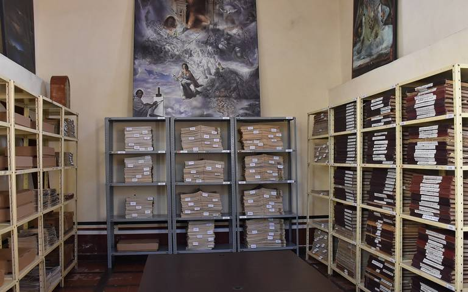

Tiene a su cargo la preservación y fomento del patrimonio histórico, cultural y artístico del municipio, así como el sentido de identidad, mediante estrategias de conservación, difusión, investigación y educación,
Construido en 1854, el Panteón de la Santa Veracruz, en San Juan del Río, es uno de los más antiguos en la entidad, pero también es uno muy peculiar, pues desde 1997 tiene una doble función: como cementerio y como Museo de la Muerte. Este espacio, que actualmente está en labores de remodelación, alberga los restos de la clase más alta de San Juan del Río, un lugar que recuerda que aún en la muerte había diferencias de clases, según cuenta Neftalí Sáenz Bárcenas, cronista municipal de San Juan del Río. Detalló que desde su construcción, el panteón estuvo pensado para estar dividido en zonas, donde en la parte más alta estaba la gente de mayor riqueza o importancia, de acuerdo con siete clases sociales que distinguían a la sociedad sanjuanense en la época.
Fundado en el Panteón de la Santa Veracruz el 24 de Junio de 1997. El Museo se encuentra en la parte posterior de la Capilla del Calvario en el Centro Histórico de la Ciudad de San Juan del Río. El Museo de la Muerte tiene como propósito el presentar a la muerte como fenómeno cultural que acompaña a la historia de la humanidad. Los cambios en la manera de presentar los entierros en diferentes épocas y el simbolismo que manifiesta el pensar del ser humano. El Museo aborda el tema mortuorio a lo largo de cinco momentos: la muerte en Mesoamérica, la muerte en la Nueva España, la muerte Laica, la muerte en la cultura popular contemporánea y la representación del Altar de Muertos. Cuenta con una Sala Museográfica y otra de exposiciones temporales. El lugar donde fue ubicado es en el antiguo Panteón de la Santa Veracruz, edificado en el siglo XIX el cual contiene nichos, osario, sepulturas y una Capilla de paso. Su arquitectura, esculturas y pinturas murales de la época, resaltan el ejemplo cristiano con simbolismo al tema mortuorio.
Más allá de los restos de quienes ahí descansan, para los vecinos del lugar este espacio se ha convertido en motivo de leyendas y de interés, tanto para aquellos que se declaran veneradores de la muerte como de quienes aseguran haber sido testigos de situaciones paranormales. Hoy este espacio se encuentra en trabajos de remodelación, pues la autoridad municipal y estatal buscan rescatar la cultura histórica de este sitio, sus pinturas originales y devolver a los muertos el honor que han perdido.
Teniendo en su acervo documentos desde 1661, como el que contiene información de la fundación del Hospital de San Juan de Dios; pasando por una copia del Acta de Independencia de 1821, que el Imperio Mexicano envió a San Juan del Río; documentos de los preparativos de las visitas del Emperador Maximiliano de Habsburgo y del ex Presidente de México, Antonio López de Santa Anna, son solo una parte del patrimonio que posee el Archivo Histórico de San Juan del Río. Neftalí Sáenz Bárcenas, Jefe de Patrimonio Cultural de San Juan del Río, explicó que el Archivo Histórico, ha vivido varias etapas y fue en 1988 cuando por instrucciones del Presidente Municipal de esa época, la Sra. Beatriz Cuéllar Quiroz empieza a encargarse de rescatar, organizar y conservar los documentos, libros, carpetas, expedientes y legajos que forman parte del Archivo Histórico.
Es un lugar histórico y emblemático no solo para San Juan del Río sino también para todo el estado de Querétaro este inmueble fue dedicado principalmente a la recaudación de los impuestos eclesiásticos, es decir de la iglesia de los cuales el significado de diezmo era que se solia dejabar el 10% de lo que de lo que se tuviera ya fueran en especie este dinero, animales, semillas, etc, que se tuviera se debaja el 10% así que era como una aduana en la puerta principal de los templos principales, en San Juan del Río el templo de los naturales y la parroquia de españoles que fueron concluidos en la tercera década de 1700 gracias a la demanda de los propios sanjuaneses y al empeño de muchos fue rescatado y posteriormente fue restaurado para ser convertido en el majestuoso centro cultural que es el que alberga al día de hoy. Al dia de hoy se dedica totalmente a la cultura a las artes y al turismo otorgando dignamente para la consecución fomento y difusión de estas actividades, fue entregado el pueblo de San Juan del Río el 17 de marzo del año 2015